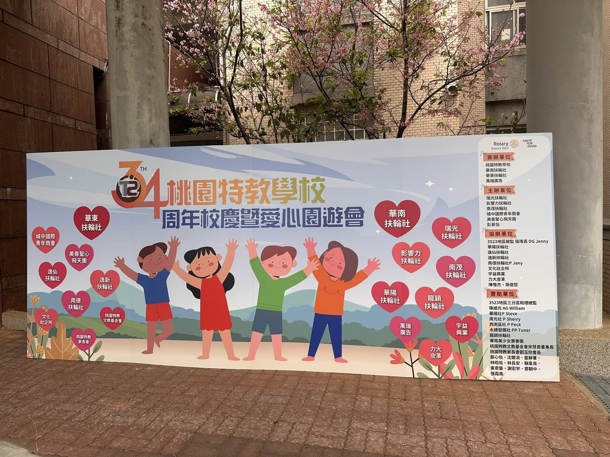
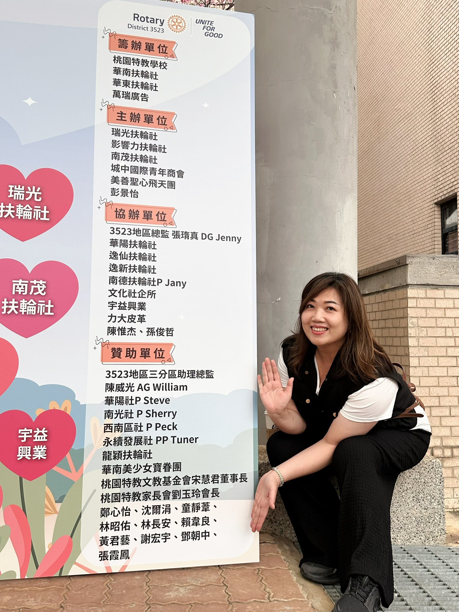
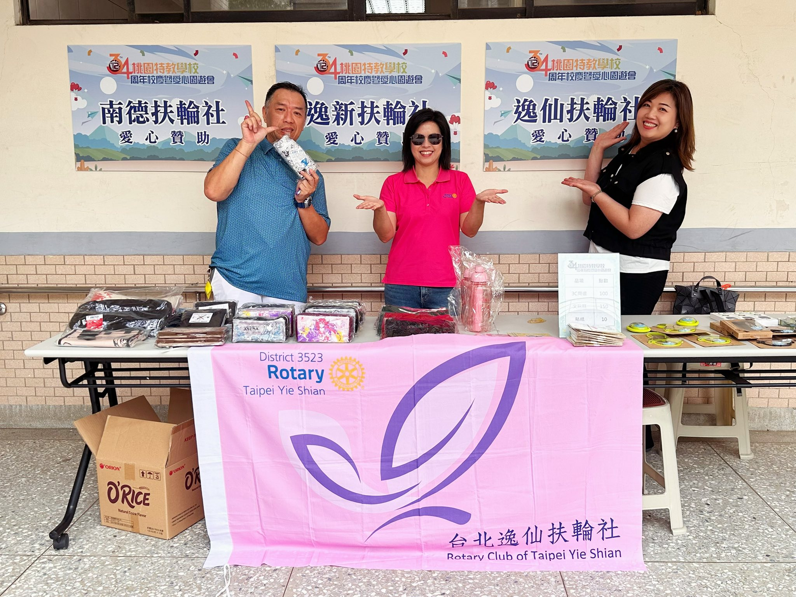
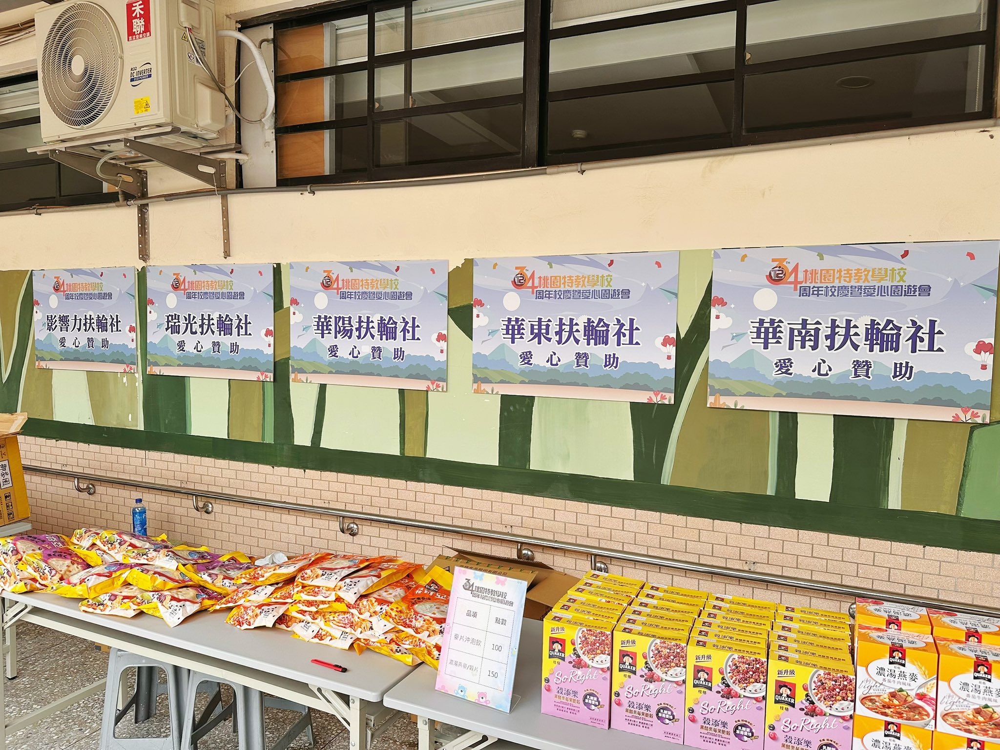
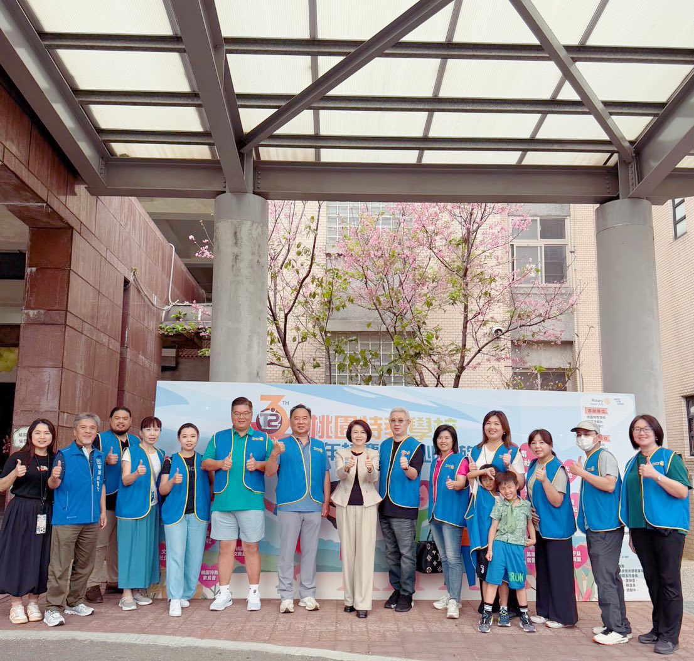
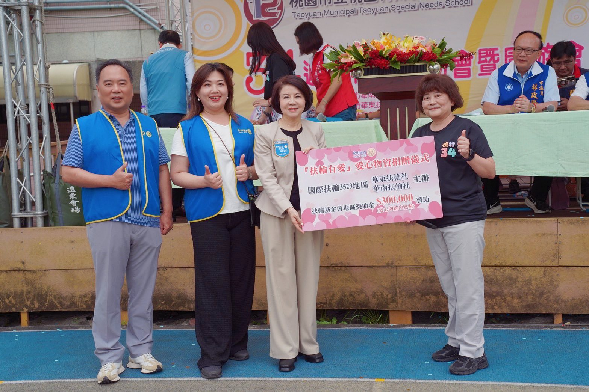

「讓我將生命中最閃亮的那一段與你分享～讓我用生命中最嘹亮的歌聲來陪伴你～讓我將心中最溫柔的部分給你，在你最需要朋友的時候，讓我真心真意對你在每一天～❤️」
終於完成了桃園特教的活動❤️圓滿的落幕，而且頗受好評，終於讓我放下一顆心❤️沉澱了兩天，很想感謝一些人，沒有你們，我真的做不到🥹🥹
我從來沒有想過可以完成這件事🥹這對我來說真的就是不可能的任務。😎從和學校接觸，老師說心裡有個願望，如果孩子們能夠體驗一下夜市的遊戲，可以自由兌換獎品，可以吃到想吃的東西，不用在意別人的眼光，不知道有多好❤️
然後，我只好找A D😎😁，他就像我的哆啦A夢，只要許願就可以😃❤️😁任何事情，在他看起來一點都不難😃👍何況他有最佳團隊😎😎😎，這些員工都是一個人當三個人用，真的很厲害👍
園遊會的難度真的很高，就算做一個非常迷你的小型園遊會，👉🏻需要胖卡車準備餐點，👉🏻需要準備夜市遊戲，比方說套圈圈，打彈珠等等各種遊樂設施，👉🏻需要準備物資讓孩子們可以兌換回家，也邀請他們的父母來參加他們的運動會，至少需要50到60萬的經費。華東社不到20個人，要用社費來維持各項活動已經不太容易，更何況是這樣大型的活動❤️❤️
但好像，如果你決定要做一件對的事，只要大聲地說出來，宇宙都會來幫你🥹
首先，華南社Jason,我的好咖同學，二話不說，同意和我一起當籌辦社。我的底氣就夠了❤️。
接下來，我所有的朋友，我的國中同學，高中同學，我瑞士念書時的同學，我瑜伽班的聖心姐妹們、我的扶輪社好友，在我發文後，都自發性的捐款，有的甚至還秘密的進行不讓我知道😁但是因為需要清楚的對帳，我還是把他們找出來了😁😁 ❤️除了總監也個人贊助❤️，華陽社、瑞光社、影響力社、南茂社 、逸仙社、逸新社、南德社、龍穎社，還有西南區社長同學Peck, 南光社社長同學Sherry, 也跳出來響應❤️
就連青商會和文化社企所，也首次參與扶輪的活動，和我們一起做公益❤️華東社的社友們和執秘Elaine也是一早就來忙到最後❤️
還有當天不能來的朋友，也在家裡默默地幫我禱告，也真的讓我很感動❤️大家都在用自己的方式，促使我來成就這件事🥹真的很愛大家❤️❤️
那天主任跟我在校園裡面相遇了幾次，每次都很興奮地抓著我跟我分享：「太好了，我今天看到好多家長來我真的太開心了」 👍「這群孩子這一年大概就是出來這一次了，還好今天讓他們真的很開心（聽到這個我一陣心酸湧上❤️）」👍「我看到他們在打彈珠打得好專注好開心喔」👍
老師們真的很有愛❤️。他們牽著學生，拿著點數，到攤位上來。我說：「老師，前面還有泡麵可以換耶，你要不要換泡麵回家？」老師說：「沒關係，我換小朋友喜歡吃的餅乾給他們吃好了」也特別感謝南德社的社長同學Jany,贊助了好吃的餅乾，反應非常的熱烈❤️
總監一早就來了，除了致詞，他也待了很久，和我們一起照顧學生們，也親手試玩了遊戲❤️
三分區的A G William也到場，他分享：「透過今天的活動，我了解到台灣特殊教育的現況及挑戰；對於願意投入特殊教育的老師及行政人員，我個人由衷的敬佩及感動。由於受特殊教育的學生，因為身體或是心智的關係，比較不方便或是不受控，因此很難去夜市或是體驗餐車。 我覺得這次除了捐款及物資，我們將夜市的一些遊戲項目及餐車帶到學校，在學生熟悉的環境下，體驗夜市及餐車，真的是很好的設計。 而這也是事前與學校溝通後，得知他們的需求之後的規劃。 這次3523參與的社很多，謝謝華東及華南的主辦及第三分區華陽、瑞光及影響力支持。😃👍」 看了真的很開心❤️。扶青的社長Julia, 也號召了10位義工一起幫忙💪🏼
龍穎社的David, 還做了一支影片。平常嘻嘻哈哈的，也給我回饋：「今天真的很想好好說聲謝謝。❤️謝謝華東社社長 Anny姊 以及華南社 PP AD哥 籌備了這場很有意義的愛心園遊會。😃
原本是抱著來服務的心情到場，但實際參與後，反而是自己被現場滿滿的笑容與溫暖療癒了一整天。
這樣的活動能順利完成，背後一定花了非常多時間與心力，真的很不簡單，也真的很值得。❤️
謝謝你們的用心，讓今天成為一場很有溫度、很有意義的活動。
附上影片，和大家一起回味今天的感動。」
謝謝逸仙社的 好姐妹Susan, 他問我：「明年你們還會舉辦這個活動嗎？」我說：「但這場活動真的不簡單耶，我真的不敢說。但如果可以的話當然希望可以延續下去。」Susan說：「如果有辦的話，我願意個人繼續支持❤️❤️」（還有什麼比這個更動人的呢？😃）Vicky和 Anthony,當天也是全家出動，太令人感動❤️
我的好姐妹，逸新社的P Sandy，因為員工旅遊，所以也沒能到場。但是他也是第一時間就舉雙手支持❤️他說他人沒到沒關係，他的錢一定會到。😃
南茂社的C P Parker，當天一早就來了，他也給予很高的評價❤️。他覺得專為這些學生們舉辦這場園遊會，真的很有意義。如果他們無法到外面去體驗遊戲和美食，我們就把遊戲和美食搬到他們的面前。
當然還要感謝我的機車ㄤ。一年的任期即將結束，扶輪朋友們好像都已經很熟悉他的存在。😃每次的義工服務，每次的到場，只要有需要，他都在❤️❤️
還有我的姐姐妹妹們，也都是全家出動一起幫忙到最後❤️
真的很想仔細的紀錄下當天的每一個細節。深怕忘記這麼珍貴的片刻❤️今年的「團結行善」，我深深地感受到，這四個字的力量有多大😃💪🏼💪🏼💪🏼
然後我好愛我們這一屆的社長同學們，謝謝幫助桃園特教的所有朋友們，有你們真好❤️❤️





